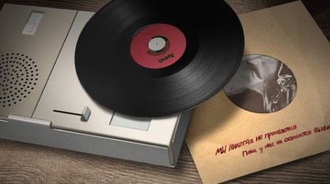

This is an interactive image, click any of the 3 main objects
The word in the vinyl translates to "Anna" while the word in the sleeve translates to:
This is a direct reference to the real world singer "Alla Pugacheva" and her single "Million Scarlet Roses".
While the record player is the Braun TP1 record player made by Dieter Rams.